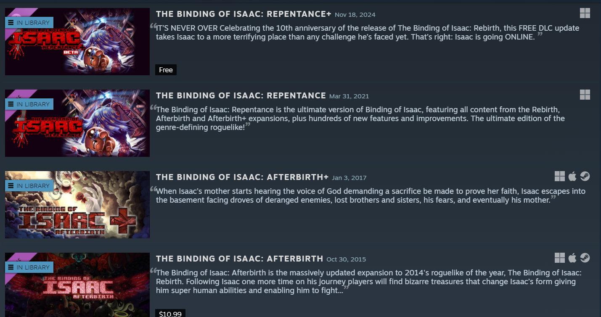
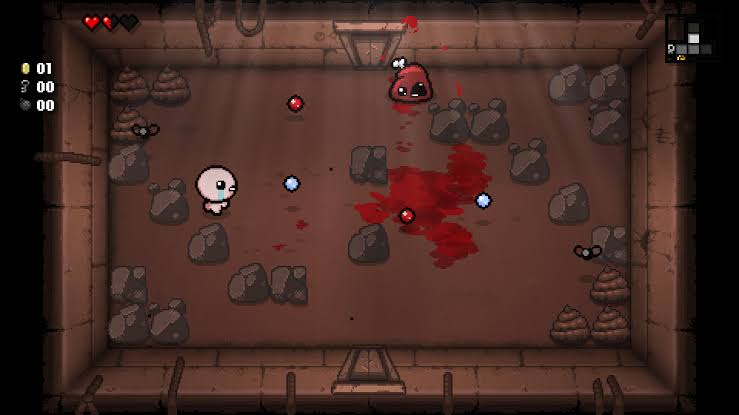

"Isaac and his Mother..."
have a load of DLC you can spend money on!

The Binding Of Isaac: Rebirth doesn't only stop at the base game. It has plenty of expansions to the base game that add hundreds of hours of content. These DLCs contain one of my few gripes about the game. There's a lot of quality of life features that are paywalled behind these, and its pretty annoying! I don't think there's any reason you should have to shell out another 20 dollars to see your stats or know what the items do! Especially when there's a bunch of free mods that do it already! Just add it in an update for gosh sakes! These DLC have plenty and plenty of amazing content that justify the price though.
The Binding Of Isaac: Rebirth Expansions
- Afterbirth: Two new playable characters, a whole new gamemode, a new final boss (along with 8 new bosses), and a bunch of new items!
- Afterbirth +: A hard version of the previously mentioned gamemode, 2 new characters, and guess what, even more new items!
- Repentance: A full alternate path, two new characters, A new version of every single character with their own special gimmicks, and even MORE NEW ITEMS!!
- Repentance +: Some item buffs and full online multiplayer!
All of the ones with a '+' in the name are free as long as you have the respective DLC. Please don't take the small amount of criticism I had previously too hard; these DLC are AMAZING. Repentance especially is basically a brand new game once you install it. There was recently a huge sale on all of these, so if you're reading this now, don't let missing out stop you. These are amazingly priced and you'll get your money's worth.

I really can't praise this game enough. It's so fun and addictive that just talking about it here made me want to procrastinate and go play a few runs. If you're a gamer and you haven't yet, why not? Stop putting it off! This game will change your life. It doesn't matter if it's your first Roguelike. It's very accessible and easy to pick up. Try it try it try it! You won't regret it for a second.
That's all from me! Thank you for reading my rant about this silly little game. I hope you enjoyed, and I hope you'll give it a chance if you can! It's so fun. A really great time. :D